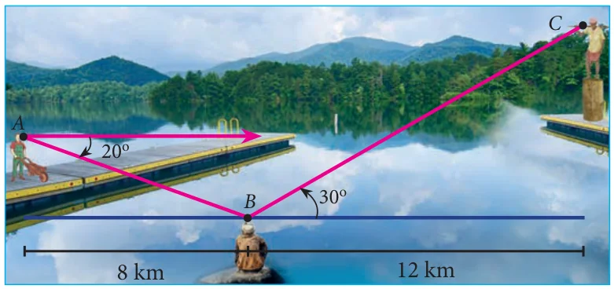

- From the top of a tree of height 13 m the angle of elevation and depression of the top and bottom of another tree are \(45^\circ\) and \(30^\circ\) respectively. Find the height of the second tree. (\(\sqrt{3} = 1.732\))
- A man is standing on the deck of a ship, which is 40 m above water level. He observes the angle of elevation of the top of a hill as \(60^\circ\) and the angle of depression of the base of the hill as \(30^\circ\). Calculate the distance of the hill from the ship and the height of the hill. (\(\sqrt{3} = 1.732\))
- If the angle of elevation of a cloud from a point ‘\(h\)’ metres above a lake is \(\theta_1\) and the angle of depression of its reflection in the lake is \(\theta_2\). Prove that the height that the cloud is located from the ground is \(\dfrac{h(\tan\theta_1 + \tan\theta_2)}{\tan\theta_2 - \tan\theta_1}\).
- The angle of elevation of the top of a cell phone tower from the foot of a high apartment is \(60^\circ\) and the angle of depression of the foot of the tower from the top of the apartment is \(30^\circ\). If the height of the apartment is 50 m, find the height of the cell phone tower. According to radiations control norms, the minimum height of a cell phone tower should be 120 m. State if the height of the above mentioned cell phone tower meets the radiation norms.
- The angles of elevation and depression of the top and bottom of a lamp post from the top of a 66 m high apartment are \(60^\circ\) and \(30^\circ\) respectively. Find
- The height of the lamp post.
- The difference between height of the lamp post and the apartment.
- The distance between the lamp post and the apartment. (\(\sqrt{3} = 1.732\))
- Three villagers \(A\), \(B\) and \(C\) can see each other using telescope across a valley. The horizontal distance between \(A\) and \(B\) is 8 km and the horizontal distance between \(B\) and \(C\) is 12 km. The angle of depression of B from \(A\) is \(20^\circ\) and the angle of elevation of \(C\) from \(B\) is \(30^\circ\). Calculate : (i) the vertical height between \(A\) and \(B\). (ii) the vertical height between \(B\) and \(C\). (\(\tan 20^\circ = 0.3640\), \(\sqrt{3} = 1.732\))
